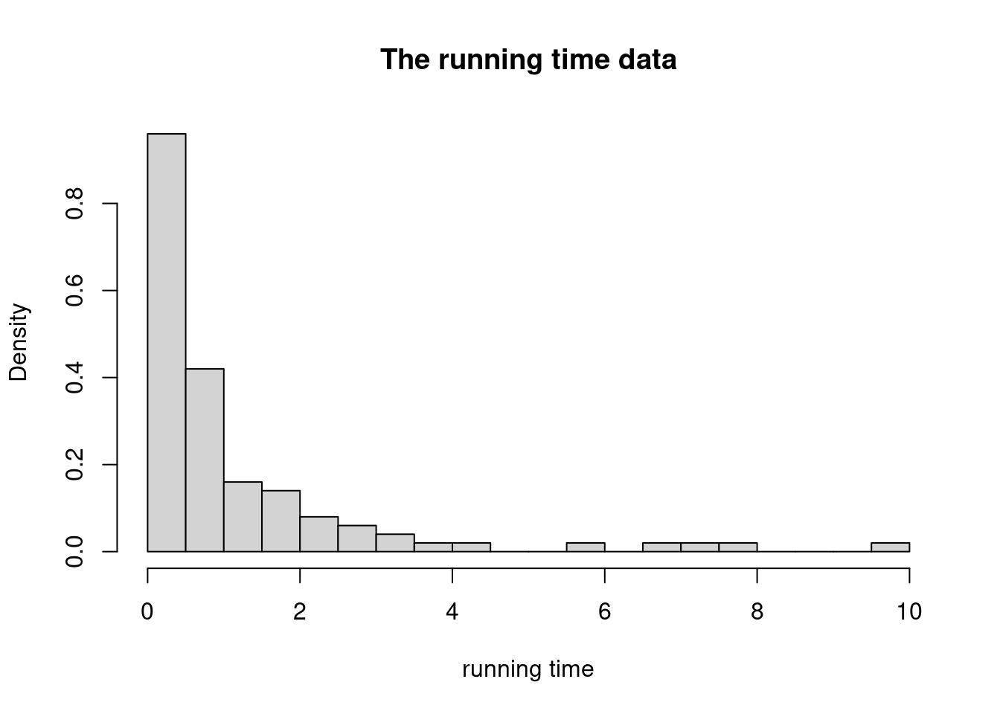

Chapter 8 - Classification and Generalized regression: Exercise solutions
Author
Mattias Villani
Click on the arrow to see a solution.
Exercise 8.1
The dataset runningtime.csv available at contains measurements on the running time (time) for a computer code on \(n=100\) computers with different hardware specifications and operating systems. The hardware performance is summarized by a normalized performance score (performance), where a lower score means better performance. The operating system is either Windows (os=1) or Linux (os=0). Consider the following exponential regression model for \(i=1,\ldots,n\)\[\begin{equation*}
y_i \vert \mathbf{x}_i,\boldsymbol{\beta} \sim \mathrm{Expon}\left(\frac{1}{\exp\left(\mathbf{x}_i^\top \boldsymbol{\beta}\right)}\right)
\end{equation*}\] where \(y_i\) is the response variable, \(\mathbf{x}\) is a vector with three elements, the first element is \(1\) for the intercept, the second element is the performance measure and the final element if the operating system for the computer. Note that \(\mathbb{E}(y_i \vert \mathbf{x}_i) = \exp\big(\mathbf{x}_i^\top \boldsymbol{\beta}\big)\) for this model. Let the prior be \(\beta\sim N(\boldsymbol{0},\tau^2\boldsymbol{I})\), where \(\tau = 10\) and \(\boldsymbol{I}\) is the identity matrix.
Loading the data and mvtnorm package
library(mvtnorm)data =read.csv("https://raw.githubusercontent.com/mattiasvillani/BayesianLearningBook/main/data/runningtime.csv")y = data$timeX =cbind(1, data$performance, data$os)hist(y, 30, freq =FALSE, main ="The running time data", xlab ="running time")

a) Do a normal approximation of the posterior distribution \(p(\boldsymbol{\beta} | \mathbf{y},\mathbf{X})\) based on numerical optimization. Simulate samples from this approximation and make histograms to approximate the marginal posterior for each regression coefficient in \(\beta\).
Solution
We will use optim to get the posterior mode and posterior observed information matrix for the normal approximation. The log posterior function is
b) Use the normal approximation from a) and simulation to approximate the predictive distribution of the running time for a new Windows computer with performance measure equal to \(1.3\).
Solution
xPred =c(1, 1.3, 1)yPredDraws =rep(0, nSim)for (i in1:nSim){ yPredDraws[i] =rexp(1, 1/exp(xPred %*% betaDraws[i,]))}hist(yPredDraws, 30, freq =FALSE, main ="Predictive density", xlab ="yPred", col ="cornsilk", xlim =c(0,20))